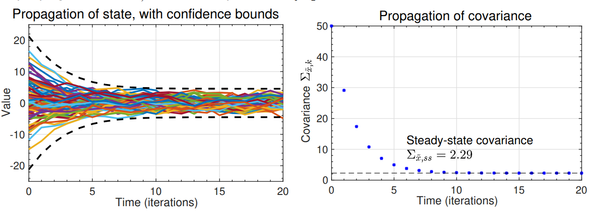

136.1 Predicting stochastic-system statistics
What are the statistics of the state of a system driven by a random process?
That is, how do the system dynamics influence the time-propagation of x(t)?
- We do not know x(t) exactly, but we can develop a PDF for x(t).
First, we contrast a linear system driven by white noise \textcolor{blue}{w(t)}, possibly in addition to deterministic input u(t): \begin{aligned} \dot{x}(t) &= A x(t) + B u(t) + \textcolor{blue}{w(t)} \\ x(0) &\sim \mathcal{N}(\bar{x}_0, \Sigma_{\tilde{x},0}) \\ \textcolor{blue}{w(t)} &\sim \mathcal{N}(\bar{w}, \Sigma_{\tilde{w}}) \end{aligned}
with a deterministic model, which can be easily simulated:
\begin{aligned} \dot{x}(t) &= A x(t) + B u(t), \\ x(0) &= x_0, \\ x(0)& \text{ and } u(t) \text{ known} \end{aligned}
In the first case, the state is never known with certainty; in the second case, the system response is completely specified. Therefore, there is no uncertainty.
136.2 Visualizing the information
- In the stochastic case, the best we can do is to say how uncertainty in the state changes with time.
- Deterministic: x(t_0) and inputs known
- State trajectory is deterministic.
- Stochastic: PDFs for x(t_0) and for inputs known
- Can find only PDF for x(t).
- We will work with Gaussian noises, which are uniquely defined by their first and second-central moments.
- The Gaussian assumption is not essential, but in any case we will only ever track the first two moments.
{kind=link}
136.3 Discrete-time systems
NOTATION: Until now, we have always used capital letters for random variables (RVs). The state of a system driven by a random process is an RV, so we could now call it X(t) or X_k. But, it is more common to retain standard notation x(t) or x_k and understand from context that we are now discussing an RV.
We seek to find the statistics of x_k for a discrete system; we will later look at how to get an equivalent answer for continuous systems.
Model (where A_{d,k-1} and B_{d,k-1} are assumed known and can be time-varying):
x_k = A_{d,k-1} x_{k-1} + B_{d,k-1} u_{k-1} + w_{k-1}
where:
- x_k: State vector, a random process.
- u_k: Deterministic control inputs.
- w_k: Noise that drives the process (process noise), a random process.
We make some key assumptions about the driving noise:
- Zero mean: \mathbb{E}[w_k] = 0 \quad \forall k.
- White: \mathbb{E}[w_{k_1} w_{k_2}^T] = \Sigma_{\tilde{w}}\, \delta(k_1-k_2).
- \Sigma_{\tilde{w}} is called the spectral density of the noise signal w_k.
We also make assumptions regarding state uncertainty at startup. Statistics of initial condition:
\begin{aligned} \mathbb{E}[x_0] &= \bar{x}_0; \\ \mathbb{E}[(x_0 - \bar{x}_0) w_k^T] &= 0 \quad \forall k; \\ \Sigma_{\tilde{x},0} &= \mathbb{E}[(x_0 - \bar{x}_0)(x_0 - \bar{x}_0)^T] \end{aligned}
How do we propagate the statistics of this system?
136.4 Propagating the mean
- The mean value is:
\begin{aligned} \mathbb{E}[x_k] = \bar{x}_k &= \mathbb{E}[A_d x_{k-1} + B_d u_{k-1} + w_{k-1}] \\ &= A_d \bar{x}_{k-1} + B_d u_{k-1}. \end{aligned}
Therefore, the mean propagation is:
\begin{aligned} \bar{x}_0 & : \text{Given} \\ \bar{x}_k &= A_d \bar{x}_{k-1} + B_d u_{k-1}. \end{aligned}
- Deterministic simulation and the mean values of a stochastic simulation are treated the same way.
136.5 Propagating variations about the mean
To study the random variations about the mean, we need to form the second central moment of the statistics:
\Sigma_{x,k} = \mathbb{E}[(x_k - \bar{x}_k)(x_k - \bar{x}_k)^T].
Easiest to study if we note that:
\begin{aligned} x_k - \bar{x}_k &= A_d x_{k-1} + B_d u_{k-1} + w_{k-1} - A_d \bar{x}_{k-1} - B_d u_{k-1} \\ &= A_d (x_{k-1} - \bar{x}_{k-1}) + w_{k-1}. \end{aligned}
Thus, \Sigma_{x,k} = \mathbb{E}[(A_d (x_{k-1} - \bar{x}_{k-1}) + w_{k-1})(A_d (x_{k-1} - \bar{x}_{k-1}) + w_{k-1})^T].
Three terms:
- \mathbb{E}[A_d (x_{k-1} - \bar{x}_{k-1})(x_{k-1} - \bar{x}_{k-1})^T A_d^T] = A_d \Sigma_{\tilde{x},k-1} A_d^T.
- \mathbb{E}[w_{k-1} w_{k-1}^T] = \Sigma_{\tilde{w}}.
- \mathbb{E}[A_d (x_{k-1} - \bar{x}_{k-1}) w_{k-1}^T] = ?
- The third term \mathbb{E}[A_d (x_{k-1} - \bar{x}_{k-1}) w_{k-1}^T] is a cross-correlation.
- But, x_{k-1} depends only on x_0 and w_m for m = 0 \dots k-2.
- w_{k-1} is white noise uncorrelated with x_0.
- \therefore the third term is zero.
Therefore, the covariance propagation is: \begin{aligned} \Sigma_{{\tilde{x}},0}& : \text{Given} \\ \Sigma_{{\tilde{x}},k} &= A_d \Sigma_{{\tilde{x}},k-1} A_d^T + \Sigma_{\tilde{w}} \end{aligned}
- In this equation, A_d \Sigma_{{\tilde{x}},k-1} A_d^T is the homogeneous part; if the system is stable, A_d \Sigma_{{\tilde{x}},k-1} A_d^T \preceq 0 (is contractive, reduces uncertainty).
- \Sigma_{\tilde{w}} is the driving term, which always increases uncertainty since \Sigma_{\tilde{w}} > 0.
136.6 Steady-state solution
If A_d and \Sigma_{\tilde{w}} are constant and A_d is stable, there is a steady-state solution to \Sigma_{{\tilde{x}},k} = A_d \Sigma_{{\tilde{x}},k-1} A_d^T + \Sigma_{\tilde{w}}.
- As k \to \infty, \Sigma_{\tilde{x},k} = \Sigma_{\tilde{x},k+1} = \Sigma_{\tilde{x}}.
- Then, \Sigma_{\tilde{x}} = A_d \Sigma_{\tilde{x}} A_d^T + \Sigma_{\tilde{w}} 1
Can solve steady-state response by hand in the scalar case.
E.g. if: x_k = \alpha x_{k-1} + w_{k-1}; \mathbb{E}[w_{k-1}] = 0; \Sigma_{\tilde{w}} = 1; \bar{x}_0 = 0.
Then, we solve for the steady-state covariance:
\begin{aligned} \Sigma_{\tilde{x}} &= \alpha \Sigma_{\tilde{x}} \alpha^T + 1 \\ \Sigma_{\tilde{x}} (1 - \alpha^2) &= 1 \\ \Sigma_{\tilde{x}} &= \frac{1}{1 - \alpha^2} \end{aligned}
Valid for |\alpha| < 1; otherwise unstable.
136.7 Illustrating the example: \alpha = 0.75 and \Sigma_{\tilde{x},0} = 50
- Example plots 100 random trajectories and compares propagation of \Sigma_{\tilde{x},k} with steady-state
dlyap.msolution.
- The error bounds plotted are 3\sigma bounds (i.e., \pm 3\sqrt{\Sigma_{\tilde{x},k}}).
136.8 Summary
With deterministic state-space systems, we can simulate a model and have no uncertainty regarding the state trajectory.
With stochastic state-space systems, we instead track the mean and covariance of the random variable representing the state at every point in time.
We learned how to update the mean and covariance: \begin{aligned} \bar{x}_k &= A_d \bar{x}_{k-1} + B_d u_{k-1} \\ \Sigma_{\tilde{x},k} &= A_d \Sigma_{\tilde{x},k-1} A_d^T + \Sigma_{\tilde{w}} \end{aligned}
The true state x_k is expected to be within \bar{x}_k \pm 3\sqrt{\operatorname{diag}(\Sigma_{\tilde{x},k})} approximately 99.7\% of the time if the model is correct and noises are Gaussian.
a discrete Lyapunov equation. In Octave,
dlyap.m↩︎